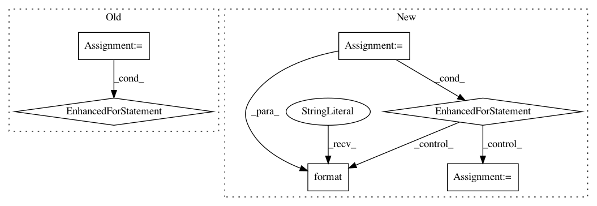

b523b464d8cafe29e352981c1c6df941f205592a,nilmtk/metrics.py,,mean_normalized_error_power,#,109
Before Change
numerator = {}
denominator = {}
for appliance in predicted_power:
numerator[appliance] = np.sum(np.abs(predicted_power[appliance] -
df_appliances_ground_truth[appliance].values))
denominator[appliance] = np.sum(
df_appliances_ground_truth[appliance].values)
mne[appliance] = numerator[appliance] * 1.0 / denominator[appliance]
return mne
def rms_error_power(predicted_power, df_appliances_ground_truth):
After Change
// TODO: need to resample to keep things in step
mne = {}
for meter in predictions.submeters():
ground_truth_meter_identifier = meter.identifier._replace(
dataset=ground_truth.dataset())
ground_truth_meter = ground_truth[ground_truth_meter_identifier]
sections = meter.good_sections()
sample_period = meter.sample_period()
period_alias = "{:d}S".format(sample_period)
// TODO: preprocessing=[Resample(sample_period)])
pred_generator = meter.power_series(periods=sections)
total_diff = 0
sum_of_ground_truth_power = 0
while True:
try:
pred_chunk = next(pred_generator)
except StopIteration:
break
else:
truth_generator = ground_truth_meter.power_series(
periods=[pred_chunk.timeframe], chunksize=1E9)
truth_chunk = next(truth_generator)
// TODO: do this resampling in the pipeline?
truth_chunk = truth_chunk.resample(period_alias)
pred_chunk = pred_chunk.resample(period_alias)
diff = (pred_chunk.icol(0) - truth_chunk.icol(0)).dropna()
total_diff += sum(abs(diff))
sum_of_ground_truth_power += truth_chunk.icol(0).dropna().sum()
mne[meter.instance()] = total_diff / sum_of_ground_truth_power
return pd.Series(mne)
//////////////////// FUNCTIONS BELOW THIS LINE HAVE NOT YET CONVERTED TO NILMTK v0.2 //////////
In pattern: SUPERPATTERN
Frequency: 4
Non-data size: 6
Instances
Project Name: nilmtk/nilmtk
Commit Name: b523b464d8cafe29e352981c1c6df941f205592a
Time: 2014-07-09
Author: jack-list@xlk.org.uk
File Name: nilmtk/metrics.py
Class Name:
Method Name: mean_normalized_error_power
Project Name: mariogeiger/se3cnn
Commit Name: 49a2ea975624090307c652e91258e5b6f02cda41
Time: 2018-10-25
Author: geiger.mario@gmail.com
File Name: examples/tetris.py
Class Name:
Method Name: main
Project Name: D2KLab/entity2rec
Commit Name: 6781bb45898cf79b639807def34b372becc91cc2
Time: 2017-12-22
Author: enricopalumbo0@gmail.com
File Name: entity2rec/sparql.py
Class Name: Sparql
Method Name: _get_properties
Project Name: stratosphereips/StratosphereLinuxIPS
Commit Name: bfff0cb09ae56b722c03f014337346c3a095abea
Time: 2019-04-02
Author: eldraco@gmail.com
File Name: slips.py
Class Name:
Method Name: